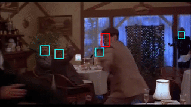

Red Carpet to Fight Club:
Partially-supervised Domain Transfer for Face Recognition in Violent Videos
Yunus Can Bilge★ Mehmet Kerim Yucel★ R. Gokberk Cinbis Nazli Ikizler-Cinbis Pinar Duygulu
In many real-world problems, there is typically a large discrepancy between the characteristics of data used in training versus deployment. A prime example is the analysis of aggression videos: in a criminal incidence, typically suspects need to be identified based on their clean portrait-like photos, instead of their prior video recordings. This results in three major challenges; large domain discrepancy between violence videos and ID-photos, the lack of video examples for most individuals and limited training data availability. To mimic such scenarios, we formulate a realistic domain-transfer problem, where the goal is to transfer the recognition model trained on clean posed images to the target domain of violent videos, where training videos are available only for a subset of subjects. To this end, we introduce the "WildestFaces" dataset, tailored to study cross-domain recognition under a variety of adverse conditions. We divide the task of transferring a recognition model from the domain of clean images to the violent videos into two sub-problems and tackle them using
- (i) stacked affine-transforms for classifier-transfer,
- (ii) attention-driven pooling for temporal-adaptation.
WildestFaces Dataset Samples



Citation
Please cite if you make use of this work and/or the dataset:
@inproceedings{wildestFaces21,
author = {Bilge, Yunus Can and Yucel, Mehmet Kerim and Cinbis, Ramazan Gokberk and Ikizler-Cinbis, Nazli and Duygulu, Pinar},
title = {Red Carpet to Fight Club: Partially-supervised Domain Transfer for Face Recognition in Violent Videos},
booktitle = {WACV},
year = {2021}
}
★ indicates equal contribution.
Based on the template by Steve Smith.